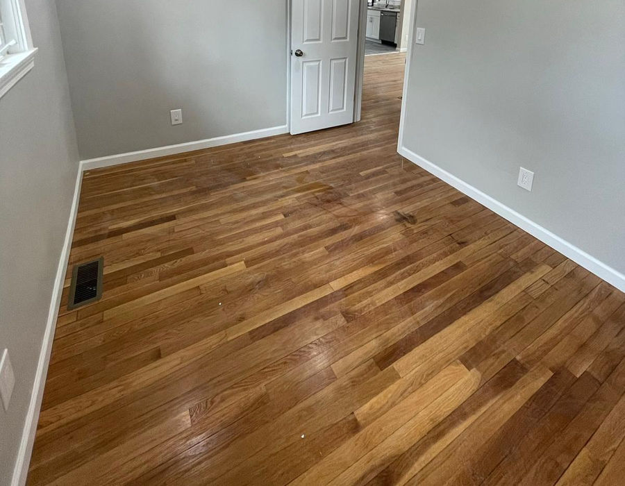
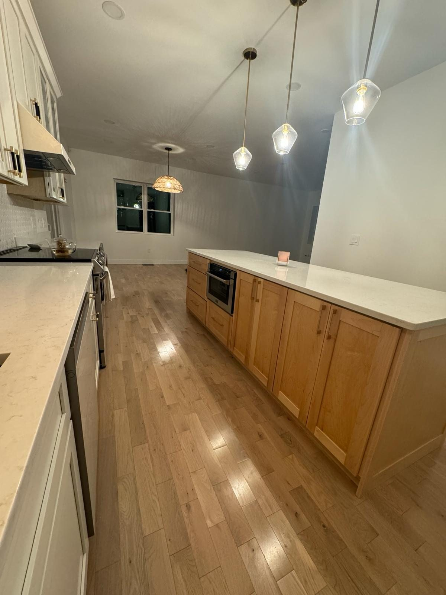

Hardwood, tile & luxury vinyl installed with craftsmanship, precision, and lasting performance.
- Flooring -
Upgrade your home with professional flooring installation tailored to your space, lifestyle and budget. SS Renovations Group installs hardwood, tile, luxury vinyl and laminate flooring across Massachusetts, with careful preparation, clean workmanship and owner-supervised service.
Get Free Estimate
Hardwood offers timeless character and long-term value. Luxury vinyl provides water resistance and easy maintenance. Tile is a durable choice for bathrooms, kitchens and entryways, while laminate can deliver a practical wood-look finish. We help homeowners compare appearance, durability, moisture exposure and maintenance before selecting a material.
The final price depends on the flooring material, room size, subfloor condition, removal of existing flooring, pattern complexity and trim work. After evaluating the space, we provide a detailed estimate so the scope and expectations are clear before installation begins.
- What We Offer -
Bring timeless beauty and value to your home with expertly installed hardwood flooring, durable, elegant, and built to last for generations.
From kitchens and bathrooms to custom spaces, we install high-quality tile and specialty flooring solutions with precision and attention to detail.
Enjoy the look of natural wood with modern durability and low maintenance, perfect for busy households and everyday living.
- Recent Work -
Tap any photo to view the full gallery →
Updating your walls too? Explore our painting services, or see the towns we serve on our service area page, including Milford and Framingham.
- FAQ -
Cost varies by material, square footage, subfloor preparation and removal needs. We provide a free, project-specific estimate after reviewing the space.
Luxury vinyl is often preferred in moisture-prone areas, while laminate can be a practical option for dry living spaces. The best choice depends on the room, traffic and desired finish.
Timing depends on the project size, material and preparation required. The schedule is reviewed with the homeowner before work begins.
Existing-floor removal can be included when needed. We confirm removal, disposal and subfloor preparation in the written scope.
Yes. Contact SS Renovations Group to schedule a free estimate for your flooring project.
Tell us about your flooring project and we'll get back to you within 24 hours.